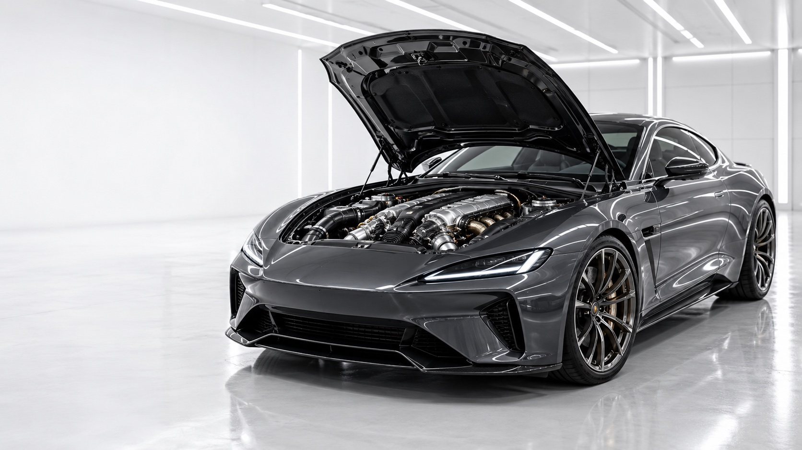
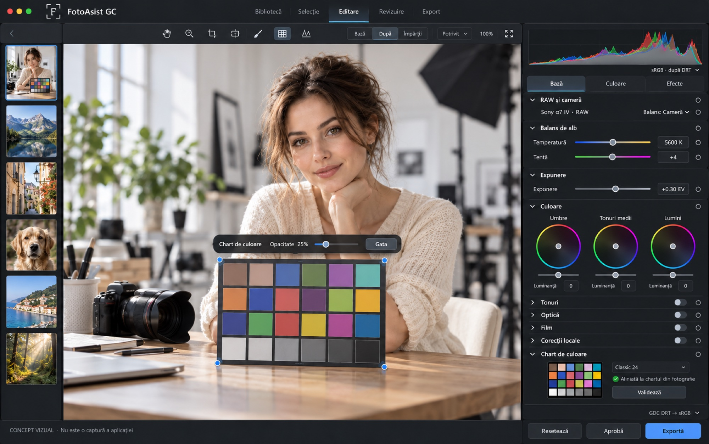
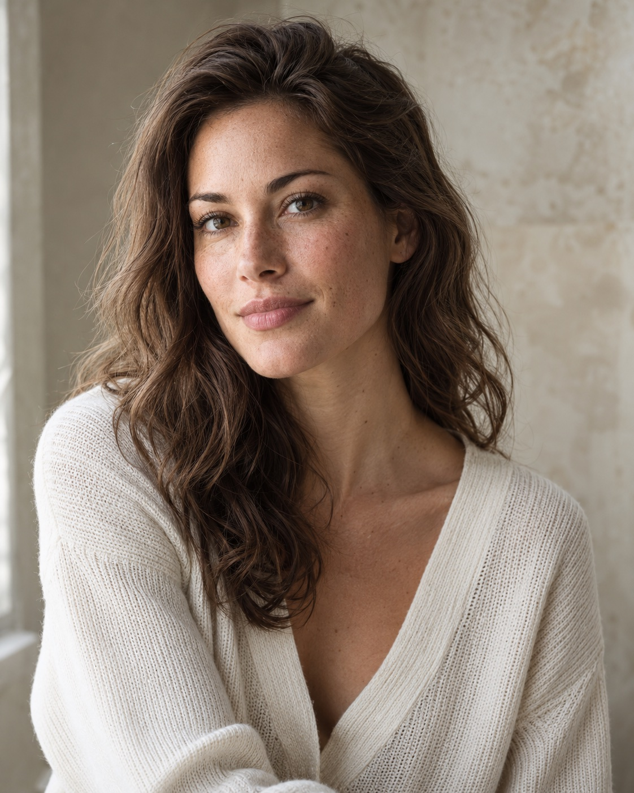
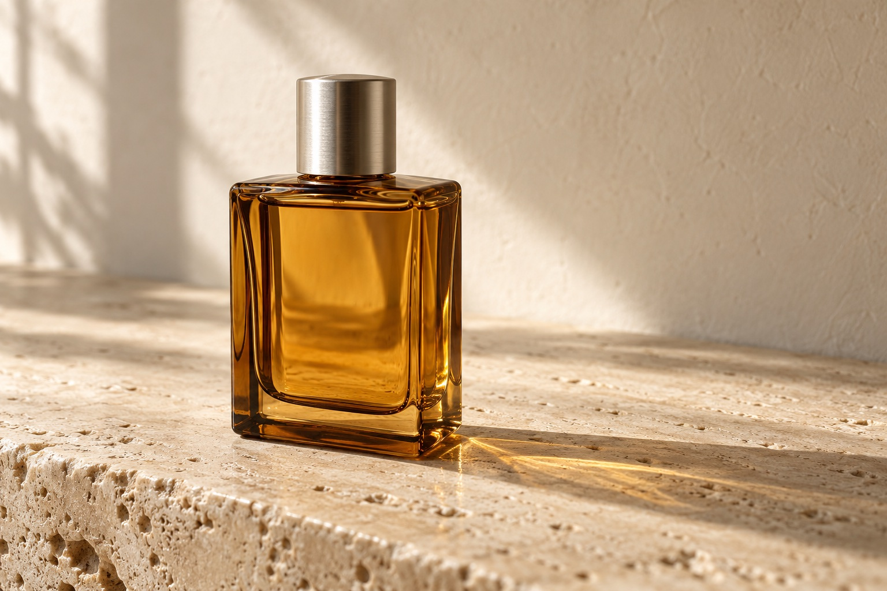

Totul pornește
de la fotografie.
Forța unui motor de culoare propriu. Claritatea unui spațiu de lucru în care alegi, editezi și livrezi în ritmul tău.

Puterea pe care o vezi.
Precizia pe care o controlezi.
FotoAsist are un motor propriu de procesare. Integrarea opțională cu DaVinci Resolve Studio îți deschide lucrul avansat pe noduri în pagina Color.
Automobil conceptual · metaforă vizuală, fără afirmații de performanță măsurată.Mai aproape de imagine.
Mai clar în fiecare pas.
O privire asupra direcției vizuale FotoAsist. Fotografia ocupă centrul; instrumentele rămân la îndemână.

Un loc pentru fiecare serie.
Surse și albume organizate, fără mutarea originalelor. Colecții virtuale pentru felul tău de a lucra.
Lasă fotografia
să vorbească.
Un portret trăiește prin lumină și expresie. Un obiect, prin textură și reflexii. Instrumentele trebuie să lase loc fiecăruia.
Imagini sintetice de prezentare, generate separat. Nu sunt RAW-uri și nu demonstrează rezultate înainte/după.

Portret / lumină naturală
Textură, nuanțe și lumină discretă.

Produs / detaliu
Reflexii, transparență și materiale.
Continuă în Resolve.
Când ai nevoie.
Biblioteca, selecția, editarea și exportul FotoAsist funcționează cu motorul propriu. Pentru integrarea pe noduri ai nevoie de DaVinci Resolve Studio pe același Mac.
OFX-urile foto au aceeași valabilitate comercială ca dreptul FotoAsist.
FotoAsist GC este un produs GDC. Nu este dezvoltat, aprobat sau susținut de Blackmagic Design. DaVinci Resolve este marca deținătorului său.Descarcă versiunea inițială.
Aceasta este o versiune inițială, în evaluare. O poți instala acum și poți cere evaluarea de 15 zile direct din aplicație. FotoAsist GC are licența și activarea lui, independente de GDC STYLE: nu ai nevoie de GDC STYLE.
Versiunea 0.5.1 · pachet de instalare .pkg · 17,9 MB
SHA-256: 7fc614772b551a4138c0d71e17126574ae994d18d4bf10fbc5df26f2f2da31c6
Ai deja 0.5.0? Închide aplicația și DaVinci Resolve, apoi instalează 0.5.1 peste ea.
Cerințe
macOS 13 (Ventura) sau mai nou · Mac cu Apple Silicon (M1 sau mai nou). Integrarea opțională pe noduri cere DaVinci Resolve Studio pe același Mac; aplicația funcționează și fără Resolve.
Instalare
1. Descarcă pachetul și deschide-l cu dublu-clic.
2. Urmează pașii instalatorului (cere parola Mac-ului tău).
3. Deschide FotoAsist GC din Applications și alege unde își ține aplicația catalogul și miniaturile. Originalele tale nu se mută.
4. Dacă folosești Resolve Studio, repornește-l ca să vadă pluginul.
Evaluarea de 15 zile, aprobată manual
Din aplicație, la starea dreptului de utilizare, ceri evaluarea de 15 zile. Cererea se înregistrează și rămâne în așteptare până o aprobă dezvoltatorul; nu se activează instantaneu. După aprobare, licența ajunge în aplicație (apeși „Verifică acum”), iar cele 15 zile încep de la aprobare. Evaluarea este doar pentru FotoAsist (fără video), este unică pentru fiecare calculator și nu cere GDC STYLE. Fără un drept valid, biblioteca, originalele și editările tale salvate rămân ale tale.
Stare
Versiune inițială în evaluare. Instalarea pe un Mac curat nu a fost verificată încă, iar produsul nu este prezentat ca final: pot exista limite și probleme. Spune-ne ce întâmpini.